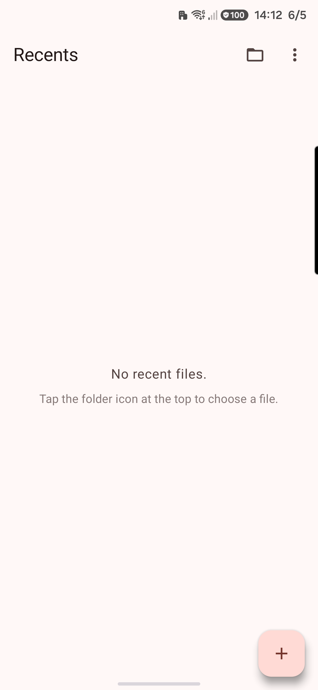
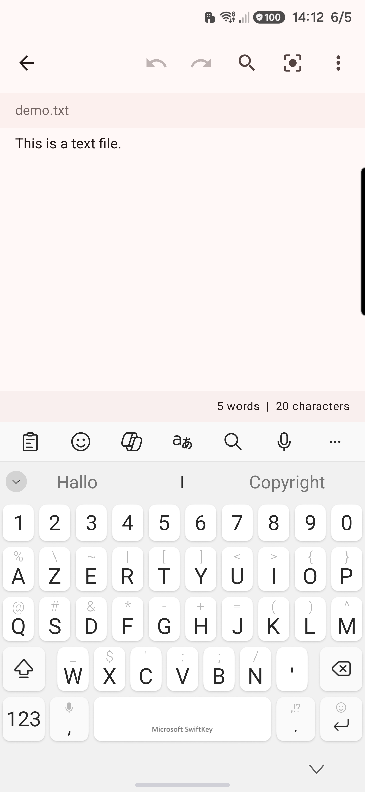
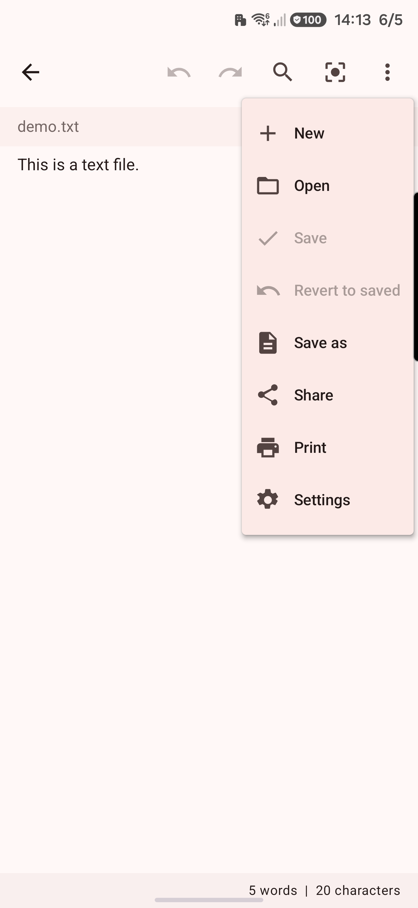
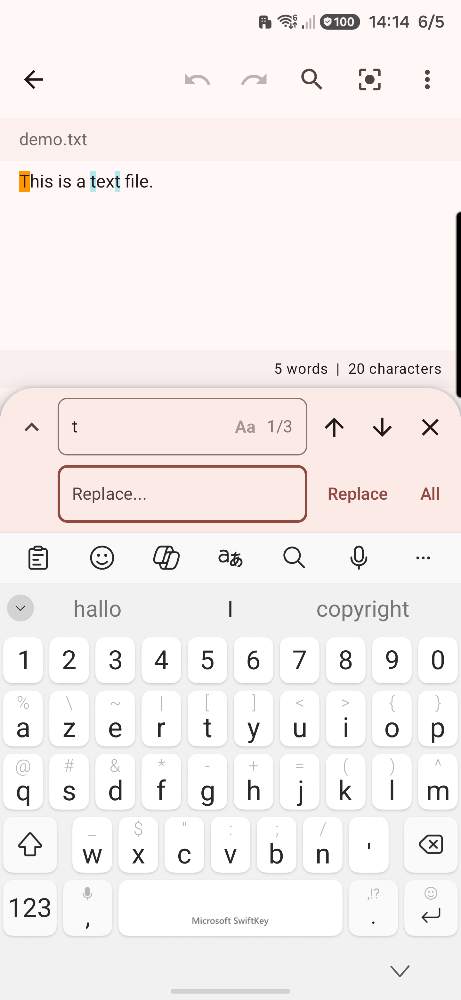
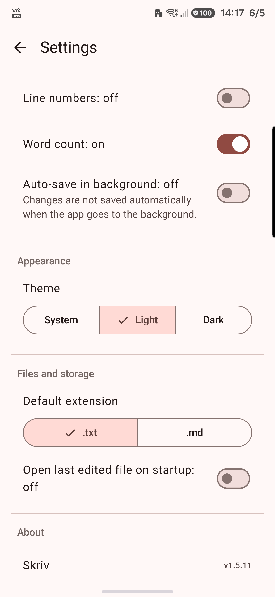
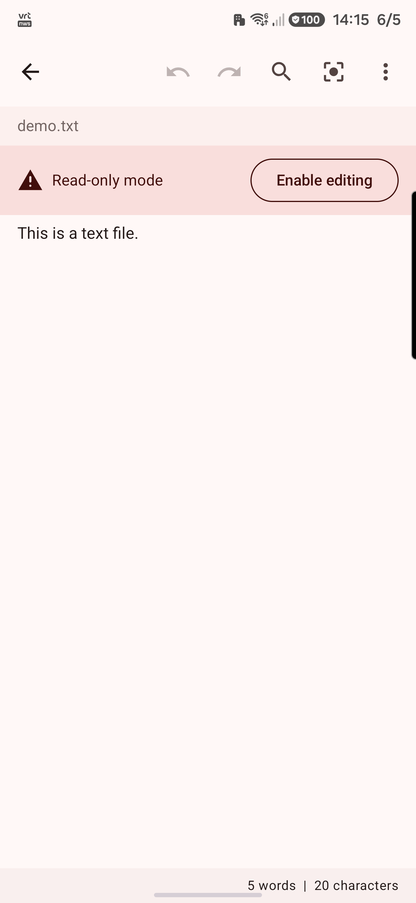

🚀 Join the Skriv Closed Beta Test
Skriv is currently in active development and undergoing closed testing on the Google Play Store. Anyone is welcome to participate to help us test the app's stability, verify compatibility across different Android devices, and refine the clean writing interface.
Want to participate? Google Play requires testers to be registered before downloading. To request access, please contact us via the support channels listed on the Play Store or by emailing skriv.editor@gmail.com. Make sure to provide the email address you use to sign in to the Google Play Store on your device (this must be a Google Account or an email linked to one). Once registered, you will receive an invitation link to download the app.
1. Why Skriv? (Core Philosophy)
Skriv is built for anyone who wants to work with plain text files as **real files**—stored directly on their device file system or personal cloud storage (such as Google Drive or OneDrive)—and edit them reliably without friction, proprietary formats, or mandatory accounts.
Files remain files
No proprietary note silos. Skriv opens, edits, and saves standard text documents (supporting both .txt and .md extensions). Your data remains yours.
Absolute Offline Privacy
Skriv does not declare the INTERNET permission. It cannot transmit drafts, collect analytics, track location, or show ads. It is fundamentally secure.
No Storage Permissions
By using modern Android APIs, Skriv never asks for broad access to your device memory. Permission is scoped strictly to files you choose.
Note: Skriv is styled natively using Material 3 and Dynamic Color palettes derived directly from your device wallpaper. It requires Android 12 (API level 31) or higher to support these core features.
2. UI Elements Reference
A detailed breakdown of every screen, button, icon, and visual indicator inside the Skriv app.
Recents Screen
The start destination of the app, displaying history of the 20 most recently accessed files.

Settings: Opens the preferences screen.Clear recent files: Empties the recents history list.
- File Icons: A sheet icon is shown for standard text (
.txt) files; a sheet icon with a slightly modified layout is shown for Markdown (.md) files to visually distinguish the file extensions. - Unavailable Warning Triangle (Red): Appears next to files that are currently inaccessible (due to deletion, renaming, or expired permissions).
Editor Screen
The main writing canvas where you view and edit document text.


New: Creates a new blank document (prompts to save current if unsaved).Open: Opens the system file picker to select a different file.Save: Saves the current file in place (disabled if already saved or read-only).Revert to saved: Reloads the file content from disk, discarding current session edits.Save as: Opens the file creator to save a new copy.Share: Sends the current text to another app.Print: Sends the document to the system printer/PDF exporter.Settings: Opens the preferences screen.
Find & Replace Bar
Appears at the bottom of the editor above the soft keyboard.

3. Settings Reference
Configure Skriv settings to match your personal writing preferences. Settings are persistent across app launches.

| Setting Name | Description | Options / Range |
|---|---|---|
| Font style | Toggles the editor font between a proportional sans-serif font and a monospace font. | monospace / proportional |
| Font size | Sets the base text size in the editor canvas. | 6 to 36 sp |
| Line spacing | Adjusts the height between lines of text to improve readability. | compact (1.1x), normal (1.3x), relaxed (1.6x), double (2.0x) |
| Reading width | A slider that sets the left and right margins of the editor columns (highly useful on tablets). | 16dp (Narrow) to 64dp (Wide) |
| Word wrap | Toggles whether long lines of text wrap to the screen boundaries or scroll horizontally. | on / off |
| Line numbers | Displays line numbers on the left-hand side of the editor. | on / off |
| Word count | Displays the debounced word and character counter footer at the bottom of the editor. | on / off |
| Auto-save in background | Silently saves changes to the current file when the app is placed in the background or minimized. Only works for files that have already been saved to a location (does not apply to "Untitled" new drafts). | on / off |
| Theme | Sets the color theme. The dark theme is a true dark background to ease eye strain. | system, always light, always dark |
| Default extension | Determines the extension suggested when saving a new document. | txt / md |
| Open last edited file on startup | Loads the last accessed document automatically when launching the app. | on / off |
4. Step-by-Step User Guides
Creating and Saving a Document
- Tap the floating **"+"** button on the Recents screen, or select **New** from the editor overflow menu.
- Write your text in the editor. The header will display "Unsaved changes".
- Tap the checkmark icon in the header (or select **Save** from the overflow menu).
- Since this is a new document, the Android system file picker will launch. Select any local folder (such as *Documents* or *Downloads*) or cloud folder (such as *Google Drive* or *OneDrive*) to save your file. Skriv does not silently save drafts in an obscure application folder; you are in full control of where your files reside.
- Your document is now saved, and all subsequent edits can be saved in place by tapping the checkmark icon in the header.
Finding and Replacing Text
- Tap the search icon in the toolbar, or press the shortcut Ctrl + F.
- Type the query in the **Find** input box. Matching terms will be highlighted in the editor. Tap the **"Aa"** button inside the search field to toggle case-sensitivity on or off.
- Use the left and right arrows in the search bar to cycle through matches.
- To perform replacements, tap the **down chevron** to expand the Replace panel.
- Type the replacement text in the **Replace** field.
- Tap **Replace** to substitute the current active match, or **All** to replace all occurrences.
- Tap **"X"** or press the system back button to dismiss the search bar.
Sharing and Printing Documents
- To Share: Open the overflow menu in the editor and tap **Share**. This bundles your file and initiates the system share sheet. If the file has unsaved changes, the app will request you save the document first so your recipient receives the latest edits.
- To Print: Open the overflow menu and tap **Print**. The app converts your plain text to HTML and opens the system print dialogue. From there, you can select any defined printer on your network, or choose **Save as PDF** to export a clean digital document.
Using Focus Mode
- Tap the target-square icon in the toolbar to toggle **Focus Mode** on.
- The app's toolbars, headers, and word count footers will fade out smoothly, leaving a clean text canvas.
- If line numbers are active, the left gutter collapses to maximize margins.
- To exit Focus Mode and restore the toolbars, tap the static Focus icon (which remains visible in the top-right corner) again.
5. Storage, Scoped Access & Recovery
Android's security architecture restricts direct filesystem paths to protect your data. Skriv implements the modern Storage Access Framework to interact safely with files.
Working with Cloud Storage (Google Drive, OneDrive, Dropbox)
Because Skriv integrates natively with Android's system-level document provider architecture, you can open and edit files stored on your cloud drives just like local files. To access cloud documents:
- Make sure the official app for your cloud provider (such as Google Drive, OneDrive, or Dropbox) is installed on your device and you are logged in.
- Inside Skriv, tap the Folder Open icon on the Recents screen (or select Open in the editor overflow menu) to launch the system file picker.
- Open the file picker's sidebar menu (by tapping the three horizontal lines in the top-left corner) and select your cloud provider from the list.
- Navigate to and open your text or Markdown file. Skriv will open it, save edits in place, and the cloud provider app will handle the background synchronization automatically.
Resolving "Read-Only" Restrictions
Files opened directly from certain folders (like system downloads, email attachments, or temporary messaging folders) do not grant permanent write permissions to any app. When this happens, Skriv shows a Read-only mode banner.
- Click **Enable editing** in the banner.
- A warning dialog will explain the restriction and offer to save a copy. Tap **Save copy**.
- The system file picker will open, suggesting a name like
filename_copy.txt. Select a directory (such as a local Documents folder or Google Drive) and save it. You can now edit and save changes in place.

File Names and Formats
To ensure that standard text recognition is preserved, Skriv handles name conflicts and missing extensions in two ways:
- Conflict Resolution (Numbered Names): Some storage providers or Android versions append numbering to files in a way that breaks file types (e.g. saving
document.txtasdocument.txt (1)). If this occurs, Skriv quietly detects the invalid format on save, deletes the duplicate file, and automatically opens the picker again with the corrected name (e.g.document (1).txt). - Save Without Extension Warning: If you attempt to save a file without a
.txtor.mdextension, Skriv will display a warning dialog. You can choose to automatically append the default extension, keep the name as is, or cancel the save to choose a different name.
Re-connecting Moved or Missing Files
If you tap a file in the Recents list that has been moved or deleted outside of Skriv:
- A **Find file** dialog will open.
- If the file was permanently deleted, tap **Remove** to remove the entry from your recents history.
- If the file was moved or renamed, tap **Locate file**. Select the file in its new location. Skriv will reconnect the file, updating the Recents list while fully preserving your previous cursor position and scroll state.
6. FAQ & Troubleshooting
Warning: "file://" URIs are Blocked: If you open a file from an external file manager and get a message saying "Skriv cannot open direct file paths...", it means the file manager is using a deprecated file path scheme. To fix this, open Skriv first and use the Folder Open icon to navigate to and select the file safely.
Common Questions & Troubleshooting
Yes. If the Auto-save in background option is enabled in settings, Skriv automatically saves your edits whenever you switch apps or return to your home screen. Note that this only applies to files that have already been saved to a location; brand-new drafts must be saved manually the first time. For more information, see the Settings Reference.
Android restricts write permissions when files are opened from system folders (like Downloads or email attachments). You can easily resolve this by saving a writable copy in a safe folder. Read the step-by-step guide in Resolving "Read-Only" Restrictions.
This is a known limitation of Microsoft's OneDrive Android app, not a Skriv issue. Android's file picker (the Storage Access Framework) can only show cloud providers that have registered support for creating new files. Google Drive does this fully; OneDrive currently only registers as a provider for opening existing files, so it appears when you open a file but not when you save one.
As a workaround, save your file locally first (e.g. to Documents or Downloads), then move or copy it into OneDrive using the OneDrive app. Alternatively, use the Share option in Skriv's editor menu (⋮ → Share) to send your file directly to the OneDrive app.
Make sure the official app of your cloud provider is installed and logged in on your device. It will automatically register as a storage location in the Android file picker. See the guide in Working with Cloud Storage.
This happens if the file was deleted, renamed, or moved outside of Skriv. Tap the file in the Recents list to locate the file in its new path or remove it from your history. See Re-connecting Moved or Missing Files.
The "Save" option is disabled if you have no unsaved changes in the editor, or if the document is currently in read-only mode (which requires enabling editing first; see Resolving "Read-Only" Restrictions).
To ensure smooth performance and zero typing lag, Skriv restricts file opening to files up to 5MB. Most text and Markdown documents are far smaller than this limit.
Yes. Because Markdown is fundamentally plain text, Skriv fully supports opening, editing, and saving .md files, and you can set .md as your default save extension. However, please note that Skriv is a pure plain-text editor, not a Markdown renderer. In line with our core philosophy of a calm, distraction-free writing environment, the app does not feature syntax highlighting, rich formatting previews, or HTML rendering. Your files remain standard text files, allowing you to easily open them in any external Markdown viewer or compiler whenever you need a formatted preview. For configuration details, see the Settings Reference.
When Focus Mode is OFF, Skriv operates in standard editor mode, showing the top toolbar (filename, save status, Undo/Redo/Find icons, and menu) and the footer (live word and character count). This view is ideal for managing files, navigating settings, and reviewing draft statistics.
When you toggle Focus Mode ON (by tapping the target-square icon in the top toolbar), the entire interface melts away. The filename header, toolbars, and word count footers fade out smoothly, leaving nothing but a pure, clean text canvas. If line numbers are active, the left gutter also collapses to maximize margins.
Why this is useful (The Flow State): Stripping away all visual UI telemetry removes the micro-distractions of constant word-count tracking and status monitoring. It creates an immersive, serene writing sanctuary that isolates your focus, helping you get into and sustain a creative writing flow. To exit Focus Mode at any time and restore the interface, simply tap the static Focus icon that remains subtly visible in the top-right corner. For more details, see Using Focus Mode.
This is a security constraint enforced by Google Play. If you encounter this error:
- Verify that you are signed in to the Google Play Store app (and your web browser) with the exact same Google Account email address you provided for registration.
- If your registered email is a non-Gmail address, ensure it is explicitly registered as a Google Account, otherwise Google Play will not recognize it.
- Ensure you have clicked the invitation/opt-in link sent to you and accepted by clicking Become a Tester. You cannot download the app from the Play Store until you opt in.